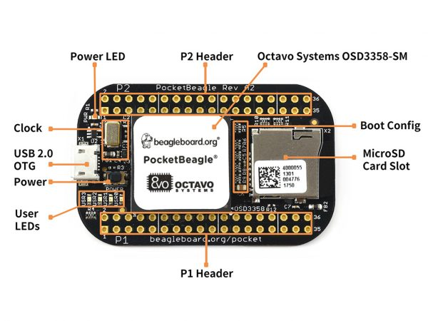
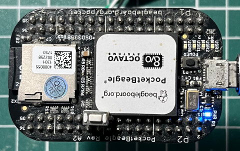
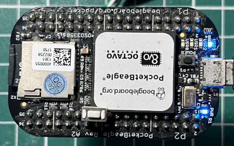

PocketBeagle開發板上有四顆USR LED，此次範例將使用USR3 LED，位置如下：

led@5 {
label = "beaglebone:green:usr3";
gpios = <&gpio1 24 GPIO_ACTIVE_HIGH>
linux,default-trigger = "mmc1";
default-state = "off";
};
P.S. USR3位置是GPIO1-24
Linux驅動程式可以當作是在寫韌體程式，因此，可以在驅動程式裡面直接操作GPIO暫存器，當然也可以遵循Linux Kernel規範，使用統一的GPIO操作函數，如果GPIO驅動程式沒有先移植好的話，那就只能使用暫存器的操作方式，幸運地，在這一版PocketBeagle Kernel中，已經完成GPIO驅動程式的移植，因此，此範例將使用Linux Kernel統一的GPIO操作函數
使用步驟：
1. gpio_request() 2. gpio_to_desc() 3. gpiod_direction_output_raw() 4. gpiod_set_raw_value() 5. gpio_free()
ldd.S
.global init_module
.global cleanup_module
.equ USR3_LED, ((32 * 1) + 24)
.section .modinfo, "ae"
__UNIQUE_ID_0: .asciz "license=GPL"
__UNIQUE_ID_1: .asciz "author=Steward Fu"
__UNIQUE_ID_2: .asciz "description=Linux Driver"
.section .text
led_name: .asciz "USR3"
.align 2
.section .text
init_module:
push {r4, r5, lr}
mov r0, #USR3_LED
ldr r1, =led_name
bl gpio_request
mov r0, #USR3_LED
bl gpio_to_desc
mov r5, r0
mov r0, r5
mov r1, #1
bl gpiod_direction_output_raw
mov r4, #30
loop:
mov r0, r5
mov r1, #0
bl gpiod_set_raw_value
mov r0, #1000
bl msleep
mov r0, r5
mov r1, #1
bl gpiod_set_raw_value
mov r0, #1000
bl msleep
subs r4, #1
bne loop
mov r0, #USR3_LED
bl gpio_free
mov r0, #0
pop {r4, r5, pc}
cleanup_module:
push {lr}
pop {pc}
.end
init_module: 請求GPIO資源，接著設定GPIO輸出方向，最後使用迴圈點亮LED(30次)
完成

